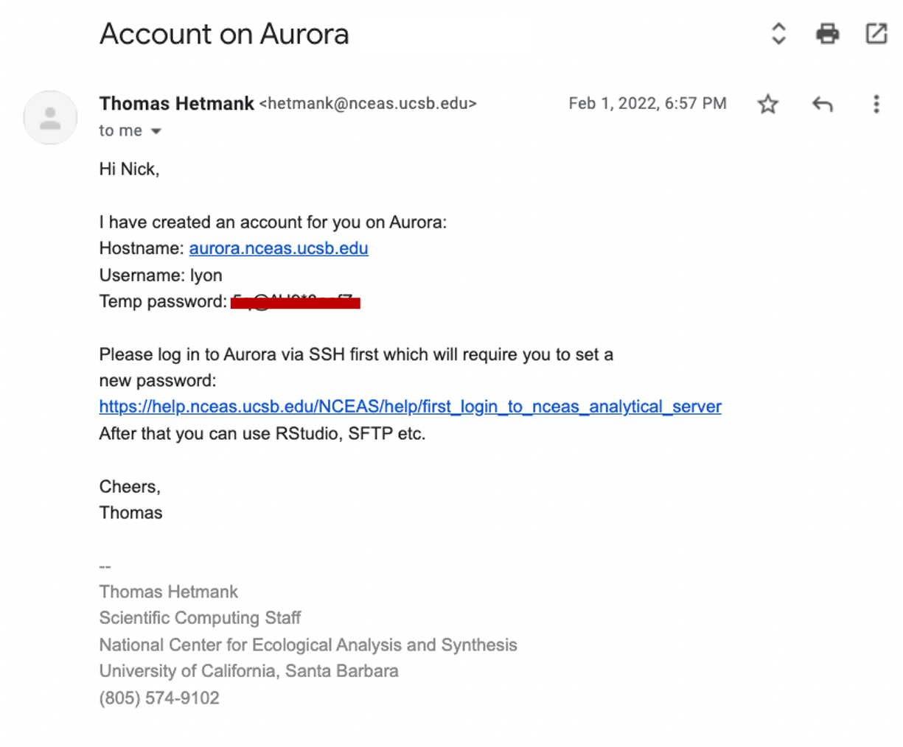

Learning Objectives
By the end of this module, you will be able to:
- Summarize the primary steps for getting set up on a server
- Connect your GitHub self with your server self
2.1 Overview
Working on NCEAS’ Server is similar to working on an entirely separate computer from the laptop or desktop computer on which you typically work. This means that you need to go through the steps of connecting GitHub to your “RStudio” again for the instance of RStudio accessed through Aurora. GitHub’s Personal Access Token is referred to as “token” hereafter for simplicity.
2.2 Getting Started on the Server
This section was developed by the LTER Scientific Computing Team. Thank you!
2.2.1 Necessary Software
The only software that you will need on your personal computer to get set up on NCEAS’ server is RStudio!
You likely have worked in the “Console” tab of RStudio (where run lines and outputs appear; see below) but RStudio has another tab to the right of the “Console” called “Terminal” which offers RStudio users access to the command line (a.k.a. the shell). If you are a veteran command line user you may prefer to use the standalone Terminal app on MacOS or PuTTY on Windows but for the sake of keeping your tool kit streamlined, we’ll walk through getting set up on NCEAS’ server using only RStudio’s Terminal tab.
The Terminal does not accept R syntax (and the Console doesn’t accept Terminal syntax) so you may notice that some of the code we’ll walk you through below is formatted differently than you would write an R script.

2.2.2 Get your Invite Ready!
After your group RSVP’d for this workshop, our team contacted NCEAS’ IT team to get you an invite email to create an account on the server. An example of what that email may look like is included below but there are two key pieces of information:
- Your username
- Your temporary password (covered by a red bar in the screenshot).
If you have not received that email, check your Spam folder for emails from Thomas Hetmank (hetmank@nceas.ucsb.edu) or Nick Outin (outin@nceas.ucsb.edu). If you have not received the email and it is not in your Spam, reach out to our team and we will work to get an invite sent to you.

2.2.3 Signing into the Server
In the following instructions, all words that look like this should be typed into the Terminal tab and run by pressing return or enter. Note that typing these commands into an R script or R Markdown will not work because it will attempt to run in the Console. All words that look [like this] (i.e., bracketed) should also be typed into the Terminal tab but the specific text should be replaced in a user-specific way that is clarified in the nearby text.
In the Terminal pane of RStudio, you will “ssh” into the server by running the following code:
ssh [your username]@aurora.nceas.ucsb.edu. It is @aurora because the name of the server is Aurora.If this is the first time you’ve accessed the server you will need to enter
yesto accept the server’s SSH key.You will then be prompted to enter your
[temporary password](see the above email example). Note that the cursor will not advance as you type but it is registering your entries! There will be no indication that you are typing (such as: “•••••••••”) This throws off many users so hopefully the above note helps set your mind at ease.You will then be prompted to change your “expired” password. We consider your temporary password to be expired as soon as you use it because sharing passwords via email is not secure and this “expiration” lets you set the password to something that only you know at the outset of your time in the server. Note again that the cursor will not advance as you type but it is working! To update your password, enter your
[temporary password], then[your strong new password]and finally re-type[your strong new password]to confirm it. Note that your new password should not be “your strong new password” :)You are ready to go! Run
exitto log out of the server in the Terminal tab.Now that you have set a new password, use your favorite web browser (e.g., Firefox, Chrome, etc.) to access Aurora and click “Login to RStudio Server”
In the resulting page, you can sign in with the same username and password you just signed in on the Terminal tab with.
You should now be in something that looks very much like RStudio but is housed in a tab on your browser! We will work together from here on out so once you have reached this point, let our team know and we can gather the group before continuing.
If the above steps have not resulted in successfully accessing Aurora, consult NCEAS’ instructions on first login and/or SSH-specific instructions for Mac vs. Windows and/or email us!
2.3 Configuring Git and GitHub on the server
2.3.1 Set up global options in Git
Before using Git, you need to tell it who you are, also known as setting the global options. To do this, we will be setting the global options in the Terminal.
To get started, let’s open a new Terminal window in RStudio. Do this by clicking Tools > Terminal > New Terminal.
A Terminal tab should now be open where your Console usually is.
Let’s start by adding your user name to the global options. Type the following into the command prompt, with your exact GitHub username, and press enter:
git config --global user.name "my_user_name"Note that if the code ran successfully, it will look like nothing happened. We will check at the end to make sure it worked.
Next, enter the following line, with the email address you used when you created your account on github.com:
git config --global user.email "my_email@nceas.ucsb.edu"When you add your username and email to the global options you must use the exact same spelling and case that you used on GitHub otherwise, Git won’t be able to sync to your account.
Next, we will set our credentials to not time out for a very long time. This is related to how our server operating system handles credentials - not doing this will make your Personal Access Token (PAT, which we will set up in the next section) expire immediately on the system, even though it is actually valid for at least a month.
git config --global credential.helper 'cache --timeout=10000000'Next, we will set the default branch name to main for any new repositories that are created moving forward. Why are we doing this? Previously, the default branch name was master and this racist terminology for Git branches motivates us to update our default branch to main instead.
git config --global init.defaultBranch mainFinally, check to make sure everything looks correct by entering this command, which will return the global options you have set.
git config --global --list2.3.2 GitHub Authentication
GitHub recently deprecated password authentication for accessing repositories, so we need to set up a secure way to authenticate.
The book Happy Git and GitHub for the useR has a wealth of information related to working with Git in R, and these instructions are based off of Chapter 9 Personal access token for HTTPS.
We will be using a Personal Access Token (PAT) in this course. For better security and long term use, we recommend taking the extra steps to set up SSH keys (check out Chapter 10 Set up Keys for SSH).
Congrats! Now you’ve setup your authentication you should be able to work with GitHub in RStudio now.